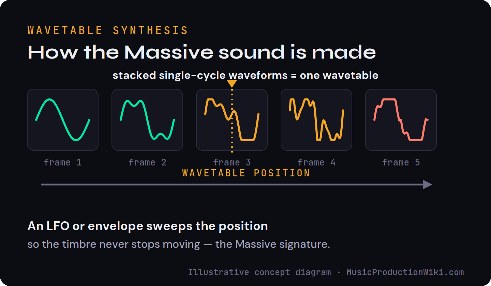
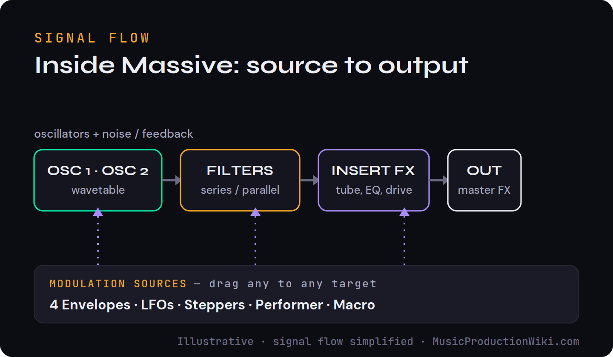
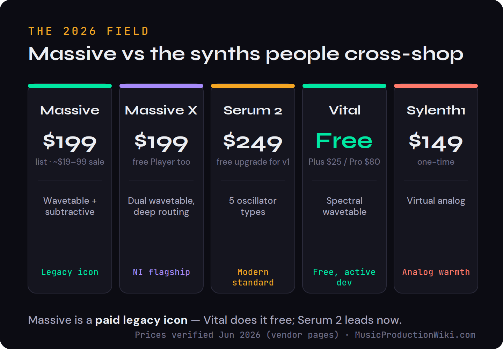

Type “is Massive still good” into a forum and you will get fifty confident, contradictory answers. Half of them assume Massive is free now (it is not), and half are arguing about a different synth entirely (Massive X). So before we score anything, let us clear the fog: the synth most people mean — classic Native Instruments Massive, the 2007 wavetable workhorse that put the growl into a decade of dubstep, electro and EDM — is a paid plugin, usually around $199 but routinely on sale for a fraction of that, and also bundled in Komplete. The honest 2026 question is not “is it free,” it is: do you buy this legend for its sound and its sale price, or do you learn modern wavetable synthesis on something newer like Serum 2 or free Vital? That is the decision this review settles.
- ✅ A sonic signature a decade of records was built on — the Massive growl is instantly recognizable
- ✅ The deepest preset and tutorial ecosystem of any synth — a huge head start for beginners
- ✅ The drag-and-drop modulation it popularized is still fast and musical
- ✅ Cheap on sale (roughly $19–99) and included in Komplete bundles
- ✅ Light, stable, and Apple-Silicon native — runs everywhere
- ❌ No longer the flagship — Massive X is the successor and gets the development
- ❌ Modern depth (granular, spectral, text-to-wavetable) lives in Serum 2 and free Vital, not here
- ❌ At the $199 list price it is poor value next to a free synth that does more
Best for: Producers who specifically want the Massive sound — the presets, the bass, the tutorials — or who find it cheap on sale or already own Komplete.
Not for: Anyone learning sound design from scratch — free Vital or Serum 2 is the better first wavetable synth in 2026.
What Massive Is in 2026
Massive is a software synthesizer Native Instruments released in 2007. Under the hood it is a hybrid: a wavetable engine for its moving, vocal, aggressive tones, wrapped in a familiar subtractive structure of oscillators, filters and envelopes. That combination turned out to be the right sound at the right moment. As dubstep, electro house and the first wave of EDM broke, Massive’s screaming basses and detuned leads became the default, to the point where you can still name the synth in a 2011 record by ear.
Two clarifications save a lot of confusion. First, Massive is not the same as Massive X. Massive X is the 2019 successor — a deeper, more modular synth that we cover below. Second, Massive is not free. The classic synth is a paid product: around $199 at list, frequently discounted to roughly $19–99 in Native Instruments’ Summer of Sound and Black Friday sales, and included in several Komplete editions. The free download people remember is Massive X Player, a stripped-down version of Massive X that ships in the free Komplete Start bundle — a different plugin entirely.
What You Actually Get: The Specs
Massive is older than its competitors, but it is not a toy. The classic version is a 16-voice synth built on Native Instruments’ wave-scanning oscillators, and the spec sheet still holds up for most production work. Here is what is under the hood.
| Specification | Massive (classic) |
|---|---|
| Synthesis | Wave-scanning wavetable, virtual-analog architecture |
| Polyphony | 16 voices |
| Oscillators | 3 wave-scanning oscillators (~85 wavetables) + modulation oscillator, noise & feedback |
| Filters | 2 multimode filters, series or parallel routing |
| Modulation | 4 envelopes, LFOs, steppers, a Performer sequencer, 8 macro knobs — all drag-and-drop |
| Effects | Insert FX + Master FX (EQ, dimension and more) |
| Presets | ~600 factory; a vast third-party library |
| Formats | VST, VST3, AU, AAX — Windows & macOS (Apple Silicon) |
| Known limits | CPU-heavy with large unison; no built-in true arpeggiator |
Two numbers tell the story against the modern field: roughly 85 wavetables and two filters, versus the 170-plus wavetables of Massive X or the five oscillator types in Serum 2. Massive was deep for 2007; today it is comfortable rather than cutting-edge — which is exactly the trade you are weighing.
The Sound That Defined a Decade
Reviews of new synths talk about flexibility. The honest reason to still care about Massive is narrower and more interesting: character. Its oscillators have a slightly raw, forward edge, and its filters bite in a way that flatters distortion and heavy modulation. Push the wavetable position with an envelope, run it into the insert effects, and you get that talking, snarling motion that an entire genre was built on. Newer synths are cleaner and more capable; few of them sound quite like this without effort.
The second half of Massive’s value is its ecosystem. Because it has been around since 2007 and was the synth everyone learned on, there is an unmatched depth of free and paid preset packs and a near-bottomless catalogue of tutorials. For a beginner, that matters more than a spec sheet: you can load a patch that already sounds like the record you are chasing, then reverse-engineer it with a tutorial made for the exact synth in front of you. That runway is one of the strongest practical reasons to choose Massive over something newer.
That influence outlived the synth itself. When producers say Massive “defined” a decade, they do not only mean the records — they mean the software. The synths that eventually overtook it, including Serum and Arturia’s Pigments, borrow heavily from Massive’s wave-scanning concept and its drag-and-drop modulation system. In other words, the reason newer synths feel familiar is that they learned from this one. Owning Massive is, in a small way, owning the template the rest of the field was built from.
How Massive Makes Its Sound
If you are new to wavetable synthesis, the core idea is simpler than it looks. An oscillator does not play one fixed waveform; it plays from a wavetable — a stack of many single-cycle waveforms lined up in order, from simple to complex. A “position” control chooses which slice of that stack you hear. The magic happens when you modulate that position over time: the timbre morphs continuously, producing the evolving, vocal, never-quite-static tones that define the style.

A wavetable is a stack of single-cycle waveforms; an LFO or envelope sweeps the position through them so the timbre keeps moving. That motion is the signature of wavetable synths like Massive. Illustrative concept diagram.
Massive gives you that position control on each oscillator, plus a set of wavetable modes that change how the slices are read — bending, spectral and formant-style behaviours that produce its more extreme tones. It is not the most modern implementation on the market anymore: Serum 2 and Vital read tables more cleanly and add granular and spectral oscillators on top. But the way Massive interprets its tables is a big part of why it sounds like Massive, and for many producers that flavour is the whole point.
Oscillators, Filters and Modulation
Architecturally, Massive is three oscillators feeding two filters (run in series or parallel), then a chain of insert and master effects on the way out. What made it feel modern in 2007, and still feels good today, is the modulation system. Instead of hunting through menus, you drag a source — one of four envelopes, the LFOs, the steppers, the performer, or a macro — straight onto almost any oscillator, filter or effect parameter. That drag-and-drop modulation approach is now standard across the genre; Massive is one of the synths that popularized it.

Massive’s signal flow, simplified: oscillators and noise into filters, then effects, then out. Any modulation source can be dragged onto almost any target — the routing approach Massive helped make standard. Illustrative.
The practical upshot is that Massive is fast to perform a sound on, not just program one. Grab an envelope, drop it on wavetable position and filter cutoff, automate a macro, and the patch comes alive quickly. The ceiling is lower than a fully modular synth like Massive X, but the floor is high and the workflow is forgiving — which is exactly why so many tutorials use it to teach synthesis in the first place.
What Massive Nails — and Where It Struggles
A fair review names the lane. Massive is exceptional at a specific family of sounds and merely adequate at others, and knowing which is which tells you whether it belongs in your folder.
Where it shines: aggressive, moving, mid-forward sounds. The growling and wobbling basslines it is famous for come from pushing the wavetable position hard and running the oscillators through the modulation oscillator’s ring and phase modulation — that is the source of the “talking,” vowel-like quality. Screaming leads, detuned supersaws, snarling plucks and gritty, FM-flavoured tones all sit naturally in its wheelhouse. If your music lives in bass, EDM, dubstep, future bass or anything that wants attitude, Massive delivers it with very little effort, and the preset library gives you a running start.
Where it struggles: pristine, modern cleanliness. Glassy pads, hyper-detailed textures and the crystalline high end that defines a lot of current pop and electronic production are easier to coax out of Serum 2 or Vital, whose newer engines simply read wavetables more cleanly. Massive is also CPU-heavy once you stack unison voices, it has no true built-in arpeggiator, and its interface predates high-resolution displays, so it can look small and dated on a modern monitor. None of these are dealbreakers — they are the honest edges of a synth designed before any of them mattered.
Massive vs Massive X (and the free Player)
This is where most of the buying confusion lives, so here is the plain version. Massive X is the 2019 successor: a deeper, more modular synth with dual wavetable oscillators, over 170 wavetables, phase-modulation oscillators, more filter types and a free-routing modulation matrix. It is built for producers who want to design new sounds from a blank slate, and it lists at the same kind of price as classic Massive (around $199, regularly half that on sale).
The two are not really competitors so much as different tools. Classic Massive wins on character and ecosystem — its specific sound and its mountain of presets and tutorials. Massive X wins on depth and flexibility, but it landed to a lukewarm reception at launch and never displaced classic Massive in producers’ hearts the way Native Instruments hoped. If you want the recognizable sound and a gentle learning curve, classic Massive. If you want a modern modular playground inside the NI ecosystem, Massive X.
And the free option people half-remember: Massive X Player is a streamlined, preset-focused version of Massive X that ships in the free Komplete Start bundle. It is genuinely free and a fine way to taste the Massive X engine, but it is not the full synth and it is not classic Massive. If “free” is your only requirement, though, the better free wavetable synth in 2026 is Vital — which brings us to the comparison that actually matters.
Massive vs Serum 2 vs Vital
For most people weighing Massive today, the real shortlist is Massive, Serum 2 and Vital. Serum 2 is the modern industry standard: on top of wavetables it adds sample, granular and spectral oscillators, an arpeggiator and a clip sequencer, with the cleanest visual feedback in the category — and at around $249 it is the most expensive of the three. Vital is the disruptor: a spectral wavetable synth whose free tier is genuinely feature-complete, with paid Plus ($25) and Pro ($80) tiers that add content rather than core features. If you have ever read “just use Vital,” that is why.

The 2026 field at a glance. Massive is a paid legacy icon; Vital does most of what it does for free; Serum 2 is the modern standard. Prices verified June 2026 against vendor pages.
The feature gap is concrete, not vague. Massive gives you three oscillators reading roughly 85 wavetables through two filters. Serum 2 adds sample, granular and spectral oscillators on top of its wavetable engine, plus an arpeggiator and a clip sequencer. Vital matches most of Serum’s wavetable power and throws in text-to-wavetable — type a word and it generates a table — for free. On raw capability, Massive is third of the three. What it has that they do not is its sound and its history, and for a lot of producers that is enough to keep it installed.
Put bluntly: if you are choosing your first wavetable synth and you do not specifically need the Massive sound, start with free Vital and spend nothing. If you want the deepest modern toolkit and the biggest commercial preset market, buy Serum 2 — our full Serum 2 review and the Serum 2 vs Vital comparison go deeper on that call. Choose Massive when its character, its presets, or a sale price is the deciding factor — not because it out-features the modern field, because it does not.
The Scorecard
Scored on what Massive is actually asked to do in 2026, drawing on Native Instruments’ published specifications, the consensus of long-term user reviews, and how it stacks against the current field — not a first-party bench test of its sound. The value score reflects the realistic on-sale price, not the $199 list.
| Axis | Score | Why |
|---|---|---|
| Sonic signature & character | 9.0 | Instantly recognizable; a genre’s worth of bass DNA. The single best reason to still own it. |
| Preset & tutorial ecosystem | 9.3 | A decade of free and paid patches and tutorials — an unmatched learning runway for any synth. |
| Workflow & modulation | 8.0 | The drag-and-drop modulation it popularized is still fast and musical, with a forgiving floor. |
| Modern wavetable depth | 7.0 | Deep for its era; Serum 2 and free Vital surpass it with granular, spectral and text-to-wavetable. |
| Modernity & updates | 6.4 | A legacy product. Apple-Silicon native and stable, but Massive X gets the roadmap now. |
| Value | 8.6 | A steal at the $19–99 sale price or inside Komplete; poor value at the $199 list when Vital is free. |
| Overall | 8.0 | A legend worth owning for its sound and sale price — not for modern synthesis. |
The Field, Honestly
Here is the shortlist most Massive shoppers are really weighing, with prices verified against each vendor in June 2026. The right pick depends entirely on whether you are buying a sound or a toolkit.
| Synth | Price (2026) | Synthesis | Best for | 2026 status |
|---|---|---|---|---|
| Massive | ~$199 list; ~$19–99 on sale | Wavetable + subtractive | The classic sound & presets | Legacy icon |
| Massive X | ~$199 (free Player) | Dual wavetable, deep routing | Modern NI modular design | NI flagship |
| Serum 2 | ~$249 (free upgrade for v1) | 5 oscillator types | Pro modern sound design | Industry standard |
| Vital | Free (Plus $25 / Pro $80) | Spectral wavetable | Free, feature-complete | Actively developed |
| Sylenth1 | ~$149 | Virtual analog (no tables) | Analog warmth, leads & chords | Mature, stable |
Sylenth1 is the odd one out and a useful contrast: it is a virtual analog synth with no wavetables, prized for warm leads and chords rather than morphing bass. If what you actually want is analog character, it is a better buy than any wavetable synth here. For a wider view, our best synth plugins roundup ranks the whole field.
Who Should Buy Massive in 2026
How to Buy Massive (and When)
Because Massive almost never deserves the $199 list price, when you buy matters as much as whether. There are three sensible routes.
Wait for a sale. Native Instruments runs two big discount windows every year — Summer of Sound around June and a Black Friday sale in November — that routinely cut synths by 50% or more, with individual classics dropping to as little as roughly $19. If you are not in a hurry, that is the price to pay, and it turns Massive from “overpriced” into “easy yes.”
Get it in a bundle. Massive is included in the mid and upper tiers of Komplete, so if you are buying a bundle for Kontakt and the rest of the collection, it comes along at no extra cost. For a lot of producers, that is how they already own it without realising.
Try before you pay anything. The free Komplete Start bundle includes Massive X Player — not classic Massive, but a no-cost way to feel the lineage — and if “free forever” is the real goal, download Vital instead and keep your money entirely.
Is Massive Worth It in 2026?
At the $199 list price, no — not when a free synth (Vital) does more and a $249 synth (Serum 2) does much more. That is the unsentimental answer. But Massive rarely sells at list. Inside a Komplete bundle, or at the $19–99 it routinely hits in Native Instruments’ seasonal sales, it becomes an easy yes for one specific reason: you are buying a sound and an ecosystem you cannot get elsewhere. No newer synth gives you the exact Massive character plus fifteen years of presets and tutorials built around it.
So the verdict splits cleanly. If you are chasing the sound of a particular era, or you already own Komplete, or it is on sale — Massive earns its place and our 8.0. If you are simply looking for a great wavetable synth to learn on and grow with, the modern field has passed it, and free Vital is where to start. Both can be true at once, which is why “is Massive still good” never gets a clean forum answer. It is — for the right reason, at the right price.
Try It Yourself: 3 Wavetable Exercises
You do not need to own Massive to build the skills it teaches. These work in Massive, Massive X Player, or free Vital — whichever you can open right now.
- Load any wavetable synth and pick a single oscillator with a basic table.
- Find the wavetable position knob and slowly turn it by hand while holding a note.
- Listen to the timbre change as you scan the stack — that is the core of the sound. Now assign an LFO to that knob and let it scan automatically.
- Load a factory or free Massive-style bass preset and play a low note.
- Mute every effect, then turn modulation sources off one at a time and note what each was doing — usually an envelope on wavetable position and filter cutoff.
- Rebuild that movement from a blank patch. Matching the patch by ear is how you actually learn synthesis, not by loading presets.
- Design a lead in Massive (or Vital) and bounce eight bars to an audio file.
- Run it through our free Mix Fingerprint tool alongside a commercial track you admire and compare the spectral balance.
- Adjust the wavetable position, unison and filter until your render’s tonal balance sits closer to the reference. Sound design and mixing are the same skill at this stage.
Frequently Asked Questions
Yes, if you specifically want its sound or find it on sale. Massive owns a sonic signature that a decade of bass music was built on, and it ships with an enormous library of presets and tutorials. But it is no longer Native Instruments’ flagship, and for modern wavetable sound design the free Vital and the paid Serum 2 do more. Buy classic Massive for its character or when it drops to roughly $19–99 in an NI sale; otherwise start with free Vital.
No. The classic Massive synthesizer is a paid plugin, normally around $199 and routinely discounted to roughly $19–99 in Native Instruments’ sales, and it is also bundled in some Komplete editions. What is free is Massive X Player, a streamlined version of the newer Massive X that ships in the free Komplete Start bundle. They are different products, so “Massive is free” usually mixes the two up.
Massive (2007) is the classic wavetable-and-subtractive hybrid that defined a generation of dubstep and EDM bass, with a huge preset and tutorial ecosystem. Massive X (2019) is its modern successor: a deeper, more modular synth with dual wavetable oscillators, over 170 wavetables, more filters and a free-routing modulation matrix. They sound and work differently, so most people choose Massive for its specific character and Massive X for modern, flexible sound design.
For learning modern sound design from scratch, Serum 2 (or the free Vital) is the better choice. Serum 2 adds sample, granular and spectral oscillators on top of wavetables, with clearer visual feedback and active development. Choose Massive when you want its particular growl, the preset library, or the countless tutorials built around it. Many producers own both.
For a complete beginner on a budget, free Vital is hard to beat: it is a modern, fully featured wavetable synth with excellent visual feedback and no cost. Massive is worth it for a beginner mainly when they specifically want the Massive sound or follow tutorials that use it. Start with Vital, and add Massive if its character is the thing you are after.
Yes. Massive runs as a VST, VST3, AU and AAX plugin on current versions of macOS, including Apple Silicon, and on Windows. It is a mature, lightweight synth that is stable on modern systems, even though it is no longer receiving major new features.
Massive’s age is an advantage here: more than a decade of producers have made and shared patches, so there is a vast pool of free and paid preset packs, plus a deep catalogue of tutorials. That ecosystem is one of the strongest reasons to choose Massive over a newer synth, and it shortens the learning curve considerably.